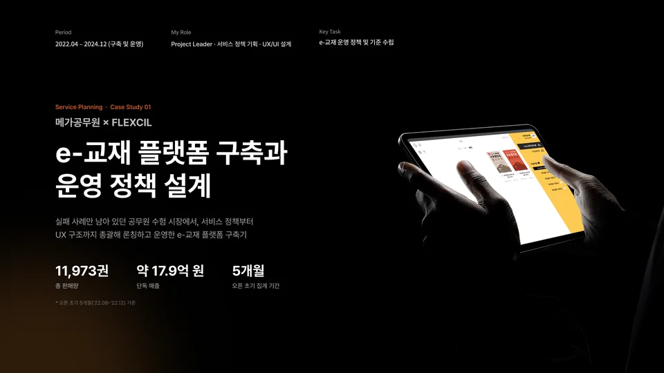
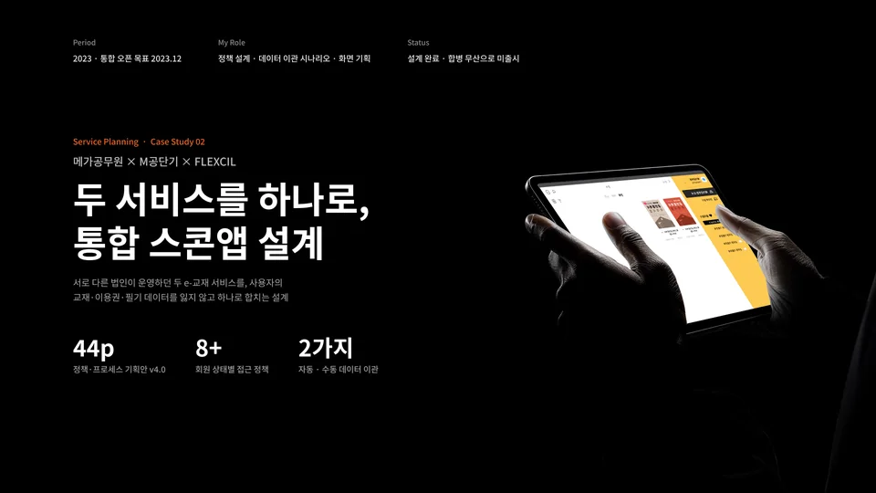
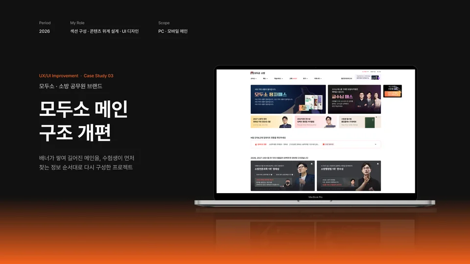
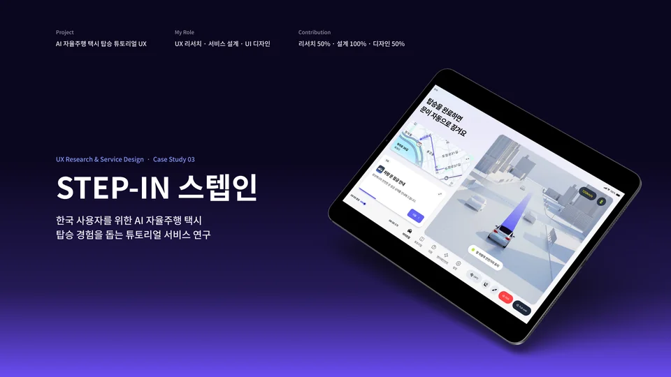

Service Planner Portfolio
정책부터 화면까지,
운영되는 서비스를 설계합니다.
김민정 · 디자이너로 시작해 서비스 정책과 운영 기획까지 맡아온 11년. 구조를 파악하고, 개선하고, 문제없이 출시하는 일을 합니다.
-

e-교재 플랫폼 구축과 운영 정책 설계
실패 사례만 남아 있던 공무원 수험 시장에서, 서비스 정책부터 UX 구조까지 총괄해 론칭하고 운영한 e-교재 플랫폼 구축기
- 운영 정책
- 서비스 구축
- 화면 설계
-

두 서비스를 하나로, 통합 스콘앱 설계
서로 다른 법인이 운영하던 두 e-교재 서비스를, 사용자의 교재·이용권·필기 데이터를 잃지 않고 하나로 합치는 설계
- 회원 정책
- 데이터 이관
- 런칭 시나리오
-

모두시리즈 서비스 개선
배너가 쌓여 길어진 메인을 수험생이 먼저 찾는 정보 순서로 다시 구성하고, 오래된 수강 플레이어를 학생 의견과 외부 제약에 맞춰 다시 설계한 개선 작업
- 정보 구조
- 개선 기획
- UI 개선
-

STEP-IN, AI 자율주행 택시 탑승 튜토리얼
한국 사용자를 위한 AI 자율주행 택시 탑승 경험을 돕는 튜토리얼 서비스 연구
- UX 리서치
- 서비스 설계